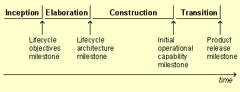

| Концепция: Оценка качества |
 |
|
| Связанные элементы |
|---|
|
Для управления качеством продукта на протяжении всего жизненного цикла проводится оценка качества продукта и процесса. Оценка качества может быть привязана к важным событиям, например завершению этапов, или к созданию рабочих продуктов, например, если речь идет о проверке кода. Ниже приведены сведения о различных процедурах оценки, выполняемых на протяжении жизненного цикла. Вехи и оценка состоянияКаждый этап и каждая итерация Rational Unified Process (RUP) завершаются созданием внутреннего или внешнего выпуска разрабатываемого продукта или его отдельных компонентов, и в этот момент выполняется оценка в следующих целях:
В конце каждого из четырех этапов RUP находятся четыре большие вехи, на которых проверяется достижение целей соответствующих этапов. Предусмотрены четыре большие вехи: 
Малые вехи находятся в конце каждой итерации и служат для проверки достижения целей итерации. Помимо этого, в процессе выполнения итераций и прохождения этапов регулярно проводятся контрольные оценки состояния. См. также:
Инспектирование, проверки и просмотрИнспектирование, проверки и просмотр - это методики, применяемые для оценки рабочих продуктов в целях повышения качества и производительности процесса разработки. Данные виды контроля осуществляются в форме совещаний, в которых один сотрудник выполняет роль ведущего, второй - секретаря (записывает информацию о запросах изменений, сложностях, вопросах и т.п.). В стандартном глоссарии IEEE издания 1990 года даны следующие определения этих процедур:
Дополнительные сведения об инспектировании, контроле и просмотре приведены в разделе Рекомендации: проверки. |
© Copyright IBM Corp. 1987, 2006. Все права защищены.. |